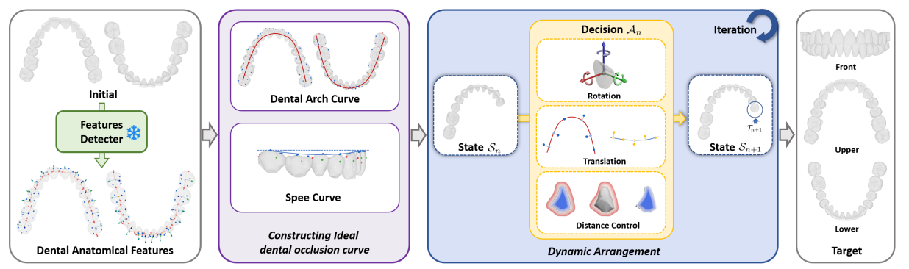
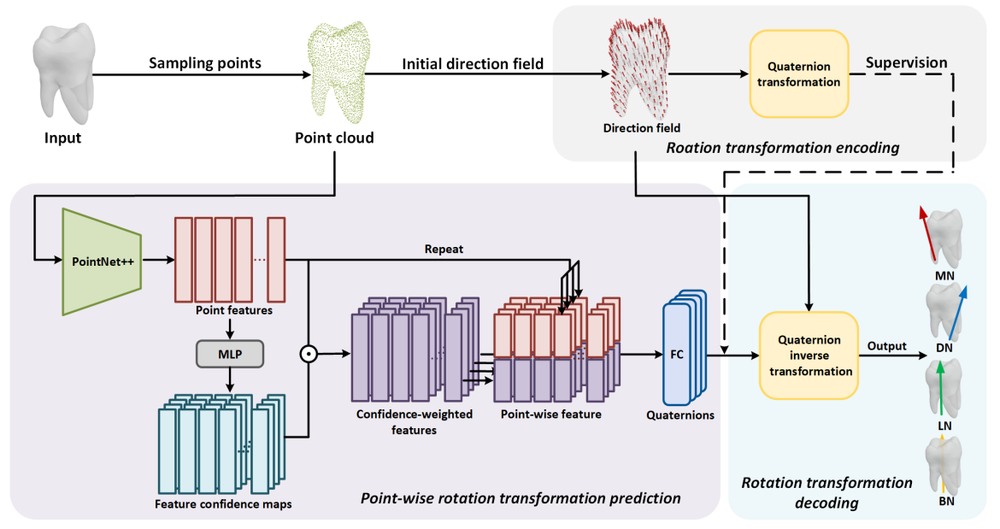

News
|
|
Publications
|  |
A Dynamic Arrangement Framework for Automatic Tooth Alignment Based on Orthodontic Rules
GMP 2025
|

|
Automated placement of dental attachments based on orthodontic pathways
Computer Aided Geometric Design 2024
|

|
Collaborative tooth motion diffusion model in digital orthodontics
AAAI 2024
|
|  |
TAD-Net: tooth axis detection network based on rotation transformation encoding
AAAI 2024
|
* indicates equal contribution; ✝ indicates corresponding authors